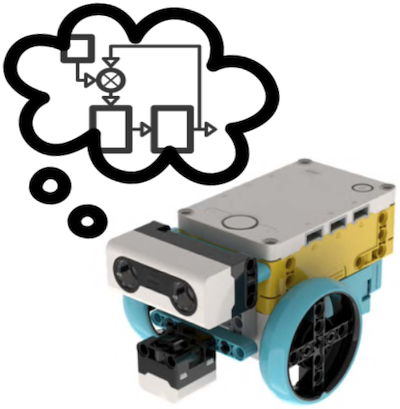
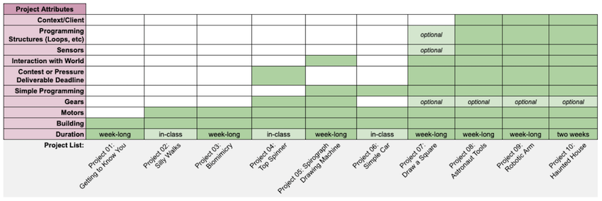
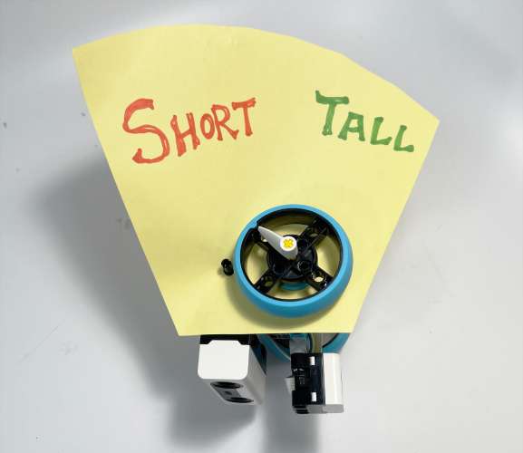
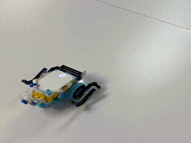

Workshop Facilitators

An introductory workshop by Ethan Danahy in collaboration with MTA (Modern Teaching Aids) Australia

Try to ensure no cables stick out beyond the width of the wheels...
Dr. E's Introduction to Engineering course at Tufts University (Simple Robotics with SPIKE Prime)

- "First Five Activities": Placemat Instructions
- The annual Nolop Makerspace Haunted House
- Final Project: "Playful Creations"
- "Robotics for the Whole Human" article
- Innovation Showcase (TV show interview, 30 min)
Sensor Connections:

Example: ColorSensor Training
Two data points: 2 sensor values and corresponding 2 motor positions
Activity 1: Nearest Neighbor (NN) Classification
Download:
NN_Classification.llsp(Python code, SPIKE App file type.llsp)Instructions:
Training (at start after first beep)
- Move the motor to position (classification).
- Adjust your sensor to correct value (data point).
- Hit the "right button" on hub for each training point.
Making Predictions (after done training)
- Hit the "left button" to stop training and start making predictions.
- Robot will beep to indicate new mode.
- Robot will now read sensor value, find nearest neighbor, and adjust motor position accordingly.
At this point, hit the "left button" to end program (displays 'X').
''' NEAREST NEIGHBOR (NN) CLASSIFICATION TRAINING (at start after first beep): (1) Move the motor to position (classification). (2) Adjust your sensor to correct value (data point). (3) Hit the "right button" on hub for each training point. MAKING PREDICTIONS (after done training): (1) Hit the "left button" to stop training and start making predictions. (2) Robot will beep to indicate new mode. (3) Robot will now read sensor value, find nearest neighbor, and adjust motor position accordingly. At this point, hit the "left button" to end program (displays 'X'). ''' from spike import PrimeHub, LightMatrix, Button, StatusLight, ForceSensor, MotionSensor, Speaker, ColorSensor, App, DistanceSensor, Motor, MotorPair from spike.control import wait_for_seconds, wait_until, Timer # ADJUST THESE CONSTANTS TO MATCH YOUR ROBOT: motor_port = 'A' motor_speed = 50 sensor_port = 'E' sensor_type = DistanceSensor # options: ForceSensor, ColorSensor, DistanceSensor hub = PrimeHub() # init motor motor = Motor(motor_port) motor.set_stop_action('coast') motor.stop() # init sensor sensor = sensor_type(sensor_port) if sensor_type == ForceSensor: sensor_function = sensor.get_force_percentage elif sensor_type == ColorSensor: sensor_function = sensor.get_ambient_light elif sensor_type == DistanceSensor: sensor_function = sensor.get_distance_percentage sensor_function() # call sensor function once to make sure initialized # init interface buttons training_button = hub.right_button training_button.was_pressed() # call button function once to initialize predict_button = hub.left_button predict_button.was_pressed() # call button function once to initialize # data structures training_data = [] # start with empty list # start the algorithm hub.speaker.beep() hub.light_matrix.off() # PART 1: TRAINING num_training_points = 0 predict_button_pushed = False training_button_pushed = False # continually collect training data # break out of loop when "predict button" is pushed while True: hub.light_matrix.write(str(num_training_points)[-1]) # just write one's digit # wait until some button pushed while not training_button_pushed and not predict_button_pushed: training_button_pushed = training_button.was_pressed() predict_button_pushed = predict_button.was_pressed() if training_button_pushed: motor_angle = motor.get_position() # position of motor (0 -> 360) sensor_value = sensor_function() if sensor_value == None: # error reading sensor print('ERROR TRAINING: sensor value is None') else: num_training_points += 1 # add new training point # create tuple of data (combine together) training_point = (num_training_points, motor_angle, sensor_value) print('Data Point #, Motor Angle, Sensor Val = ', training_point) # add tuple of training data to training data list: training_data.append(training_point) training_button_pushed = False # reset elif predict_button_pushed: # predict button was pushed; this means training was done # so exit the loop and continue program predict_button_pushed = False # reset break # DONE TRAINING # PART 2: PREDICTIONS hub.speaker.beep() hub.light_matrix.write('P') # for PREDICTIONS # Loop until the predict button is pushed again while not predict_button.was_pressed(): current_sensor_value = sensor_function() # make sure have a valid sensor value if not current_sensor_value == None: minimum_distance = 1000 # any number bigger than largest expected sensor val go_to_position = 0 # a default number found_training_index = 0 # what training point it was # go through all training points and find nearest neighbor for training_point in training_data: # unpack tuple of training data point training_index, motor_angle, sensor_value = training_point # calculate distance current_dist = abs(current_sensor_value - sensor_value) if current_dist < minimum_distance: # found closer neighbor, so update best-so-far values minimum_distance = current_dist go_to_position = motor_angle found_training_index = num_training_points # done searching through all the training data # so: move motor to this new position motor.run_to_position(go_to_position, speed=motor_speed) # loop back and get new sensor value and test again! # DONE WITH PREDICTIONS hub.speaker.beep() hub.light_matrix.write('X') # done!Activity 1: Extensions
Possible Extensions to Activity 1:
- Try training the robot to classify multiple different classification states and see if it remains accurate.
- Change the sensor from default and train it with different sensor values/input data points.
- Can you use the Color Sensor and store the RGB values?
- The Nearest Neighbor algorithm looks for the closest match. Implement K-Nearest Neighbor to find the most-common closest match.
- Extend the code to incorporate TWO motors instead of just one (two outputs).
- Extend the code to incorporate TWO sensors instead of just one (two inputs).
Activity 1: Examples
Height Classification:
 Storytelling: Punxsutawney Phil
Note: This uses different code so training process is slightly different. But project concept is possible!
Activity 1: Questions to Ask Your Students
- How well do your predictions perform? How accurate are they?
- When don't your predictions perform well? What characteristics of your system result in incorrect predictions?
- How much training data is enough? How much training data is too much?
- What happens if you don't enter any training data? Or what if you just use one data point of training data?
- How do you know your training data completely represents the entire population (set of possible values)?
- Are your input values (e.g. sensor readings) truly correlated (or causally connected?) to your output classification?
Programming K-Means Clustering in Python
- K Means Clustering Simplified in Python (note: requires
numpywhich isn't possible in micropython/on the SPIKE Hub)
Introduction to Reinforcement Learning
Activity 2: Light Matrix Pointer
Download:
Pointer.llsp(Python code, SPIKE App file type.llsp)Description:
This doesn't have anything to do with reinforcement learning, but is a good activity to get students thinking about the Hub's sensors, how it detects direction, and doing some modular mathematics to calculate difference between two direction values.
Instructions:
On start, this reads the direction the hub is facing.
Then as the hub rotates, changes arrow to always point in same direction.
''' POINTER On start, reads the direction the hub is facing. As the hub rotates, changes arrow to point in same direction ''' from spike import PrimeHub, LightMatrix, Button, StatusLight, ForceSensor, MotionSensor, Speaker, ColorSensor, App, DistanceSensor, Motor, MotorPair from spike.control import wait_for_seconds, wait_until, Timer hub = PrimeHub() direction = MotionSensor() original_direction = direction.get_yaw_angle() # -180 to 180 matrix = LightMatrix() matrix.show_image('ARROW_S') # make list of arrows for looking up/displaying later: arrows = ['ARROW_S','ARROW_SW', 'ARROW_W','ARROW_NW', 'ARROW_N','ARROW_NE', 'ARROW_E','ARROW_SE'] done_button = hub.left_button while not done_button.is_pressed(): new_direction = direction.get_yaw_angle() # -180 to 180 diff = (original_direction - new_direction) + 360 diff = diff % 360 # mod 360 to get in range 0 --> 360 index = int(diff / 45) # convert angle to list index matrix.show_image(arrows[index]) # look up and display arrow wait_for_seconds(0.25) print('Done') hub.speaker.beep() matrix.write('X')Activity 2: Questions to Ask Your Students
- What is the difference between yaw, pitch, and roll?
- What sensor(s) is the Hub using to figure out direction?
- How accurate is the sensor? What are the limitations of the sensor?
- When does the sensor work well? When will the sensor drift (get inaccurate over time)?
Q-Learning Overview (for Silly Walks robots)
BEFORE YOU START:
- Make sure your cables are organized and tight/close to your robot (so they don't get caught in the "legs")
- Build new "legs" for your robot to use instead of wheels
- Make sure you have a big open space (2m x 2m?) to train your robot; you don't want to bump into any walls or other objects
Try to ensure no cables stick out beyond the width of the wheels...
Add legs to the base MTA Bot
Activity 3: Smart Walker (via Q-Learning)
Download:
QLearning.llsp(Python code, SPIKE App file type.llsp)Description:
Silly Walk robots end up going in any/all directions! Using the Q-Learning Reinforcement Learning algorithm we can train a walker-robot to auto-correct and head straight.
 Instructions:
This program will generate a "Smart Walker" that walks straight.
- The Hub's right button will add training data to the set.
- The Hub's left button will use current data to run a test.
- Reset the robot in the same starting position for each episode.
- Make sure the robot doesn't hit walls, flip over, etc.
- Run several Training episodes to develop the internal Q-Table.
- Then do a Test episode to see how well it walks straight.
''' Q-LEARNING (REINFORCEMENT LEARNING) This program will generate a "Smart Walker" that walks straight. The Hub's right button will add training data to the set. The Hub's left button will use current data to run a test. Reset the robot in the same starting position for each episode. Make sure the robot doesn't hit walls, flip over, etc. Run several Training episodes to develop the internal Q-Table. Then do a Test episode to see how well it walks straight. ''' from spike import PrimeHub, LightMatrix, Button, StatusLight, ForceSensor, MotionSensor, Speaker, ColorSensor, App, DistanceSensor, Motor, MotorPair from spike.control import wait_for_seconds, wait_until, Timer import random # update these CONSTANTS to match your robot motorR_port = 'A' motorL_port = 'B' # motor speeds: motor_slow = 30 motor_medium = 45 motor_fast = 60 # number of steps per episode num_steps_per_episode = 10 # DEFINE StateSpace # - 0 is facing straight ahead # - negative values is when turning one way # - positive values are when turning the other way # - there are five possible states StateSpace = [-2, -1, 0, 1, 2] # values of the different states # DEFINE RewardSpace # - when the agent arrives at a particular state, it will receive a corresponding reward. RewardSpace = [-10, -2, 10, -2, -10] # must match StateSpace # DEFINE ActionSpace # - S is Slow, M is Medium, F is Fast S = motor_slow M = motor_medium F = motor_fast # - define the 9 possible combinations of the two motors # - this gives the total ActionSpace ActionSpace = [ [S,S],[S,M],[S,F], # when first motor is Slow [M,S],[M,M],[M,F], # when first motor is Medium [F,S],[F,M],[F,F] # when first motor is Fast ] # initialize robot parts: hub = PrimeHub() light_matrix = LightMatrix() light_matrix.write('Q') # for Q-Learning! motors = MotorPair(motorR_port, motorL_port) # note: this is backwards for our build! direction = MotionSensor() # init interface buttons training_button = hub.right_button training_button.was_pressed() # call once to initialized testing_button = hub.left_button testing_button.was_pressed() # call once to initialized # function: get_hub_state # - reads the hub's current angle # - returns cooresponding state (matching StateSpace) def get_hub_state(): current_angle = direction.get_yaw_angle() if current_angle < -45: state = -2 elif current_angle > 45: state = 2 elif current_angle < -10: state = -1 elif current_angle > 10: state = 1 else: # facing ahead! state = 0 return state # Epsilon-greedy policy is commonly used in RL for a learning agent to choose actions. # Epsilon represents the probability of agent choosing random actions to explore the environment (exploration). # Otherwise, the agent would choose the action it currently thinks to be the best one (exploitation), # which is the action that has highest Q-value in current state. epsilon = 0.9 def greedy(state, epsilon_in = epsilon): k = random.random() # random number 0 to 1 if epsilon > k: # greedy: pick a random action from the action space action = ActionSpace[random.randint(0, 8)] else: # else pick the action with the maximum Q-value stateindex = StateSpace.index(state) actionarray = qtable[stateindex] actionindex = actionarray.index(max(actionarray)) action = ActionSpace[actionindex] return action # action is a motor-pair set of speeds # Bellman Equation. This is how a Q-value of one state-action pair is updated after each time step. # Every time after you move from state A to state B, using action X and receiving reward R, the # Q-value of Q-table[state A, action X] will be updated. Alpha determines whether the agent should care # more about past or new learning experience. Gamma determines the value of future rewards. If # gamme is one, the agent values future rewards just as much as current ones. gamma = 0.9 alpha = 0.1 def update_q(state,action,reward,next_state): qvalue = qtable[StateSpace.index(state)][ActionSpace.index(action)] # Bellman Equation new_q = (1-alpha)*qvalue + alpha*(reward+gamma*max(qtable[StateSpace.index(next_state)])) qtable[StateSpace.index(state)][ActionSpace.index(action)] = new_q # update Q-Table with new Q-Value # drive the motors (remember: action is a pair of values from the ActionSpace) def drive(action): # start tank allows specifying left speed, right speed motors.start_tank(action[0], action[1]) ''' START OF MAIN PROGRAM ''' # Initilize total training steps, episodes, and mode total_step = 0 episode = 0 mode = -1 # training mode is 0, testing mode is 1 # Initilize Q-table with all Q-values equal to 0 (to start) # The size of the Q-table is equal to (number of total states*number of total actions) qtable = [] num_states = len(StateSpace) num_actions = len(ActionSpace) for i in range(num_states): qtable.append([0]*num_actions) # alert user we are starting hub.speaker.beep(seconds=0.5) # Main Loop: run forever (either training or testing) while True: # Show current episode on spike screen light_matrix.write(str(episode)) if training_button.was_pressed(): mode = 0 elif testing_button.was_pressed(): mode = 1 hub.speaker.beep() # beep so they know an action has been entered light_matrix.write('Test') # print TEST else: mode = -1 if mode >= 0: # if they are training or testing, otherwise loop and wait for command # PART 1: reset gyro data before start episode (to get "facing forward" direction) hub.speaker.beep() # beep so they know an action has been entered direction.reset_yaw_angle() # initial variables step = 0 if mode == 1: step -= num_steps_per_episode # when testing, double number of steps # PART 2: keep going until step count equals number of steps per episode # - or unless robot fully turns around and faces the wrong way! while step < num_steps_per_episode: # PART 2a: read robot current state state = get_hub_state() # Choose an action (if training, use epsilon; if testing, use 1) if mode == 0: action = greedy(state, epsilon_in = epsilon) else: action = greedy(state, epsilon_in = 1) # PART 2b: apply the action (aka move the robot!) drive(action) wait_for_seconds(0.5) # let robot move this way for a while # PART 2c: read the new state new_state = get_hub_state() print('On step', step, 'performed action', action,'and arrived at state', new_state) # PART 2d: give robot reward based on new state # - look up this state in the StateSpace, and determine corresponding reward reward = RewardSpace[StateSpace.index(new_state)] print('- Robot earns reward:', reward) # PART 2e: update Q-Value in table update_q(state,action,reward,new_state) # increment for next iteration of algorithm: step += 1 total_step += 1 # PART 2f: change epsilon! # - Decrease epsilon as the training process goes, so the robot will explore more at the beginning # to learn the environment quickly, and then exploit its past experience more in later training phase # to avoid too much uncessesary exploration. if epsilon > 0.4: epsilon = 0.9 - total_step*0.008 # PART 2g: really bad state! # - if robot turned all the way around (facing wrong way), stop this episode current_direction = direction.get_yaw_angle() if current_direction > 160 or current_direction < -160: print('Robot turned all the way around: stop episode!') break # DONE WITH EPISODE motors.stop() episode += 1 # increment episode number print(qtable) # debugging: print Q-Table to standard output else: # no buttons pushed (so no training or testing) # pause briefly and recheck buttons wait_for_seconds(0.2)Activity 3: Activity Extensions
- Add in the "pointer" code so the robot is always showing which direction it's TRYING to go!
- Experiment with varying the different variables:
- Number of steps per episode
- The rewards given to different states
- The epsilon-greedy factor or the alpha and gamma values
- Modify the number of states (and associated rewards) or actions.
- Update code to stop episode if the robot "flips over" on it's back.
- The robot drives for 1/2 second before registering the new state. What if this is shorter? Or longer? How does that affect the training?
Activity 3: Questions to Ask Your Students
- How do you know it's learning when progress isn't always apparent/immediately visible?
- Do you trust the code? How do you know it's doing what it claims?
- Even after extensive training, can things still go wrong? What other safeguards should be put in place?
- For what applications is reinforcement learning a good method? For what scenarios is it a bad strategy?
SPIKE Prime AI Puppy
Series of five activities to work through learning Artificial Intelligence and Machine Learning:
- Nearest Centroid Classification
- 1-Dimensional K-Nearest Neighbor (KNN)
- 3D KNN Algorithm
- Linear Regression and/or Reinforcement Learning
- Image Processing via Teachable Machines
Placemat Instructions for SPIKE Prime AI Puppy
Other Placemat Instructions
Explore several other SPIKE Prime (and other platform) activities on the CEEO's Robotics Playground site.
https://www.ceeoinnovations.org/RoboticsPlayground
Placemats related to AI and Machine Learning include (search to find!):
- K-Nearest Neighbors
- K-Means Clustering
- Reinforcement Learning
- Morse Code Decoder
- Smart Conducting Baton
Backpacks for SPIKE Prime
Add other hardware onto your SPIKE Prime, like a camera or micro:bit or breadboard.
Advanced Robotics Projects
Prof. Chris Rogers at Tufts University has taught an advanced robotics class using the SPIKE Prime platform. Check out his playlist of projects here.
Projects include:
- Introduction to WIO Terminal
- Making a SPIKE Prime Video Game
- Advanced Line Followers
- Forward and Inverse Kinematics
- Smart LEGO Dashboard that communicates with the internet
- Build a Webcam Car
- Create a Smart Teleprompter
- Dancing Robots
Beyond LEGO Robotics
Check out the following services that facilitate training and deploying Machine Learning models:
- Teachable Machine by Google: https://teachablemachine.withgoogle.com
- Edge Impulse: https://www.edgeimpulse.com
Chris Rogers, Jenn Cross, Deborah Sunter, Milan Dahal, Ziyi Zhang, David Zabner, James Dwyer
Workshop designed and developed by:


Content is Copyright 2022 by Ethan Danahy
LEGO®, the LEGO® logo, the Brick, SPIKE™, and the Minifigure are trademarks of ©The LEGO® Group.
All other trademarks and copyrights are the property of their respective owners. All rights reserved.
This workshop and content isn’t affiliated, authorized, or endorsed by The LEGO Group.